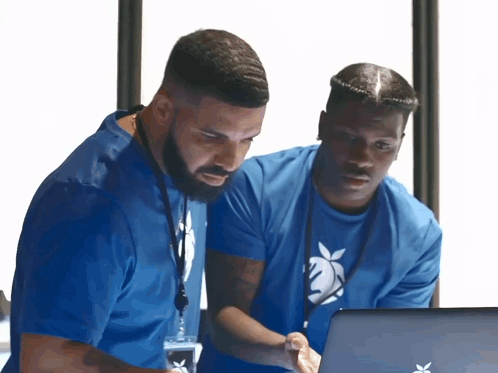

About the Developer | Nathan Nelson
This page was developed by Nathan Nelson. He is currently a university student who finds enjoyment in many computer related fields. He took an introductory course in mandarin (他的汉语不恨好!) but is not yet ready for daily conversation. Additionally, his interests include reading and probability.
Nathan took up Dynamic Web Development mainly due to his interest in careers in its related fields. However he also finds it important to have a personal webpage to display in-progress and completed development projects.
